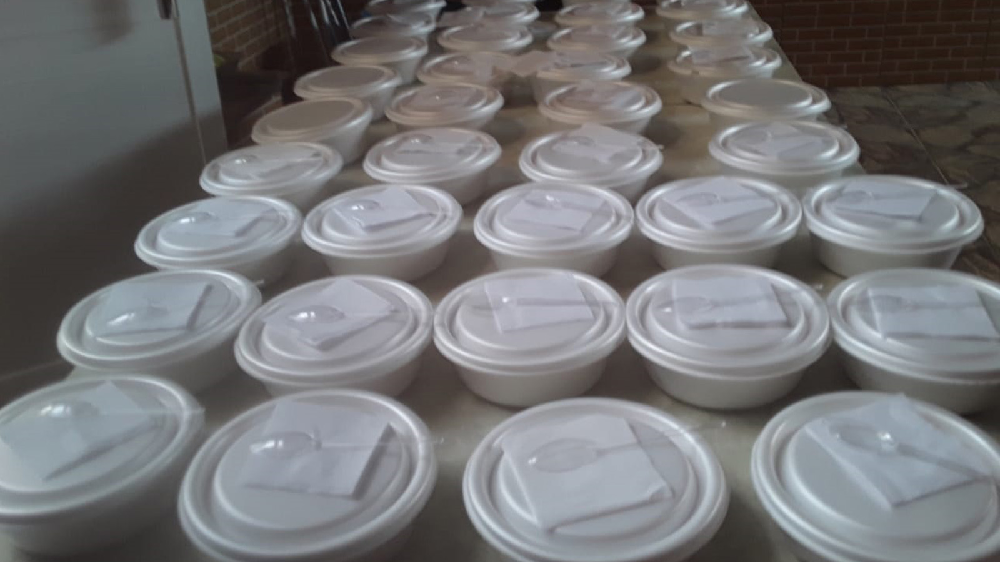
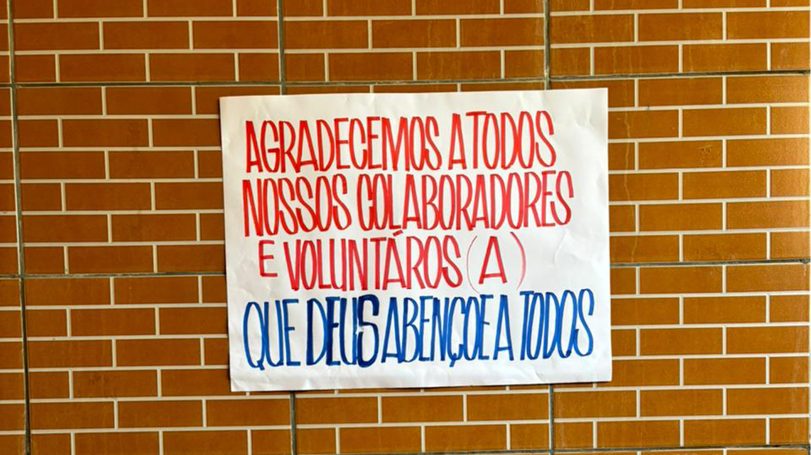
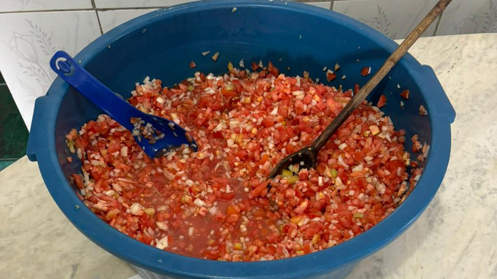
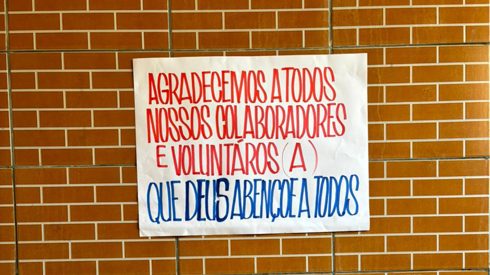
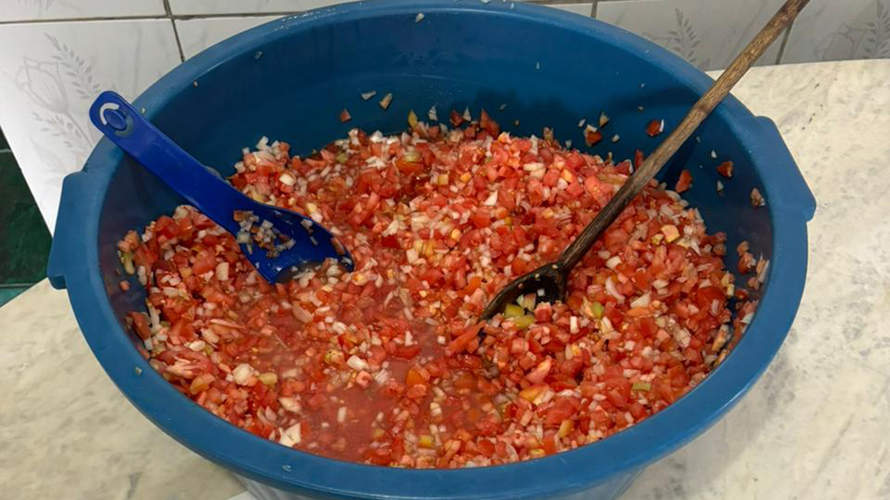

A cada semana, arrecadamos doações e utilizamos esses recursos para comprar ingredientes de qualidade. Com o apoio de voluntários dedicados, preparamos marmitas frescas e equilibradas que são distribuídas em locais estratégicos da cidade. Não se trata apenas de comida, trata-se de mostrar que essas pessoas não foram esquecidas e que a solidariedade pode ser um verdadeiro motor de mudança.
Todos os anos, recebemos essas cartinhas repletas de desejos simples e sinceros. Nossa missão é conectá-las a pessoas de bom coração que se disponham a apadrinhar um pedido. Com as doações, compramos os brinquedos e presentes sonhados por essas crianças e fazemos a entrega perto do Natal, garantindo que o espírito natalino chegue a cada coraçãozinho.


 


